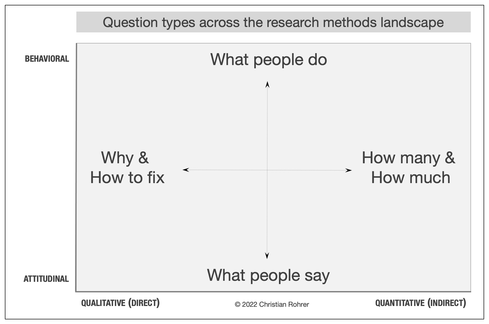

When to Use Which User-Experience Research Methods
Summary: Modern day UX research methods answer a wide range of questions. To help you know when to use which user research method, each of 20 methods is mapped across 3 dimensions and over time within a typical product-development process.
Topics
- Research Methods, , User Testing
- Strategy
- User Testing
The field of user experience has a wide range of research methods available, ranging from tried-and-true methods such as lab-based usability testing to those that have been more recently developed, such as unmoderated UX assessments.
While it's not realistic to use the full set of methods on a given project, nearly all projects would benefit from multiple research methods and from combining insights. Unfortunately, many design teams only use one or two methods that they are most familiar with. The key question is what to use when.
The Attitudinal vs. Behavioral Dimension
This distinction can be summed up by contrasting "what people say" versus "what people do" (very often the two are quite different). The purpose of attitudinal research is usually to understand or measure people's stated beliefs, but it is limited by what people are aware of and willing to report.

Learn More
Subscribe to the weekly newsletter to get notified about future articles